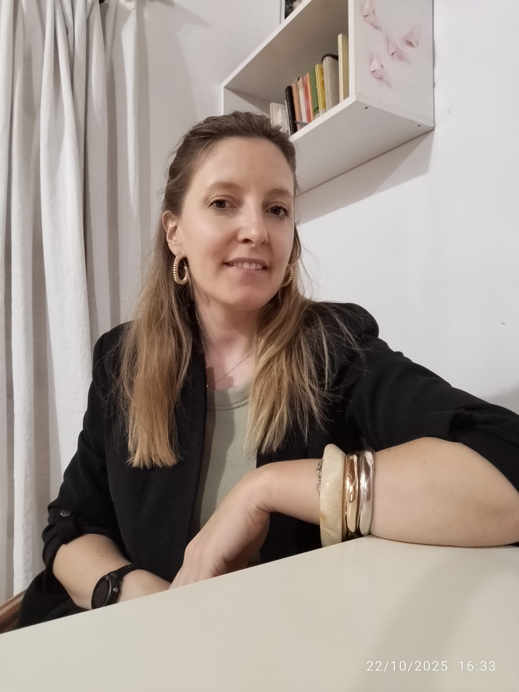
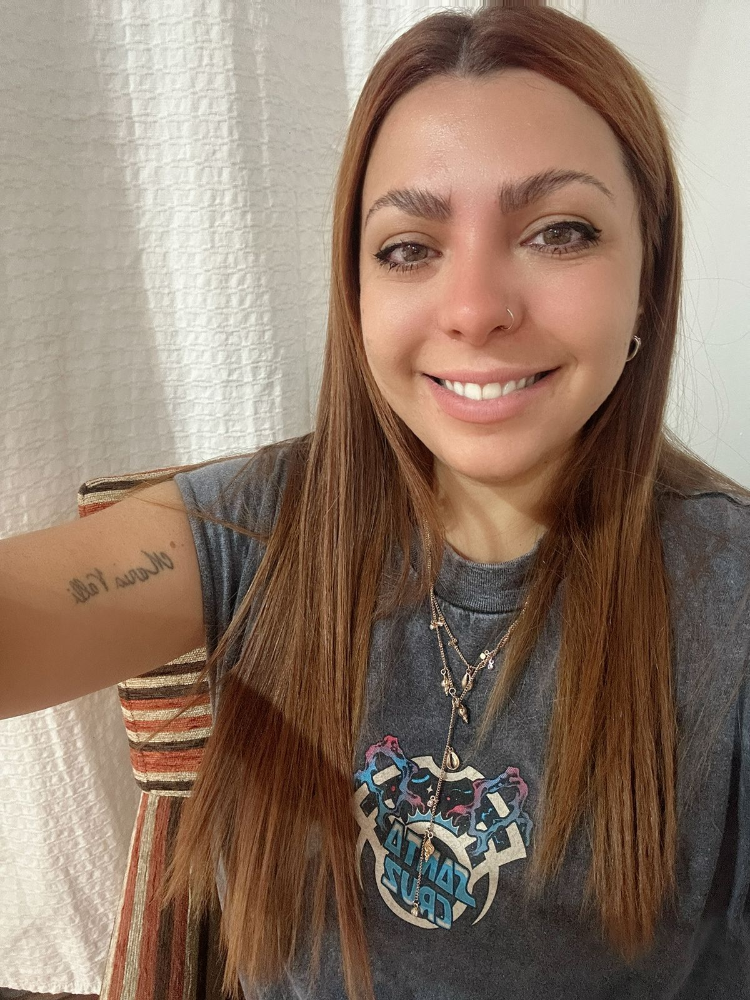
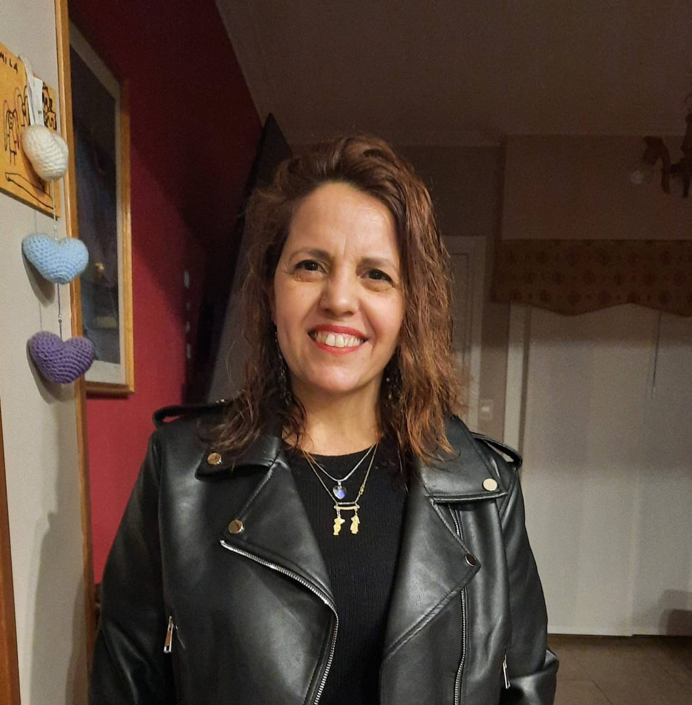

Interdisciplina en Acción
La mayor riqueza de Holismo reside en nuestra labor interdisciplinaria. Creemos que la salud y el bienestar no pueden fragmentarse, por eso nuestro equipo mantiene un diálogo constante para ofrecer respuestas integrales y humanas.
Sinergia • Compromiso • Calidez

Miriam
PSICOLOGÍA
María Rosa Donnini
PSICOPEDAGOGÍA

Gabriela
PSICOLOGÍA
Santiago Desimone
PSICOLOGÍA
Yésica Lopez Juarez
PSICOLOGÍA

Florencia Torreadrado
PSICOPEDAGOGÍA
Valeria De Risio
MUSICOTERAPIA

Gabriela Matina
MUSICOTERAPIA
Cynthia Rossi
PSICOLOGÍA
Carolina Morello
PSICOLOGÍA
×